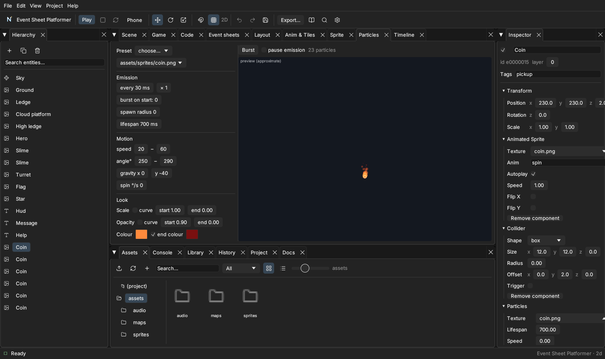
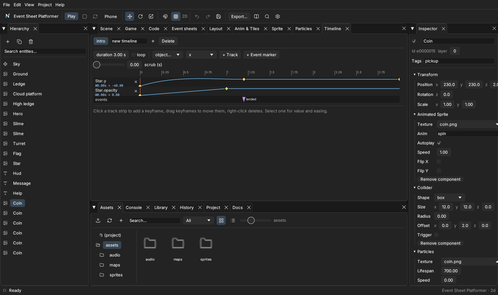

Effects, particles and timelines
Effects change how things look, particles make many tiny moving pictures (fire, sparks, snow) and timelines animate properties over time.
Effects#
Add an effect list to a scene ("settings": { "effects": [ … ] }) or to one object ("effects": [ … ]), or switch them from events (Effects → Add effect / Set parameter) and code (game.effects.add(target, "blur", {x: 4})). Built in: blur, glow, pixelate, vignette, barrel, brightness, contrast, saturate, hue, grayscale, sepia, negative and crt (scanlines). The Phaser renderer uses real GPU filters; blur, colour grading, vignette and crt also work on every other renderer through a CSS fallback. A scene's effects are cleared when the scene changes.
Particles#

Start from a preset (fire, smoke, sparks, explosion, rain, snow, magic, hit, dust, coin, confetti) and change: rate and quantity, an optional burst, spawn radius, lifetime, speed, direction, gravity, spin and the look — scale and opacity either start→end or as a curve over the particle's life, plus a colour gradient and additive glow. The preview is a quick approximation; check the final look in the game. Everything undoes.
Timelines#

A timeline animates properties over time. Make one, add tracks (an object + a property such as y, angle or opacity) and click a track strip to add a keyframe. Drag keyframes to move them, right-click deletes. Each keyframe has a value and an ease into it (a named easing such as backOut, or your own cubic-bezier curve with a preview). Event markers fire Timeline → On event in your event sheet. Play it with Timeline → Play in an event, or scene.timelines.play("intro") in code; On finished tells you when it ends.